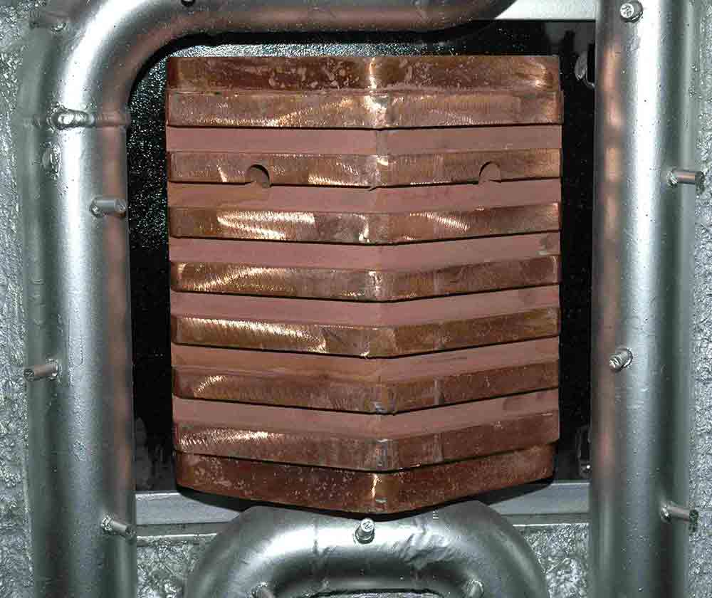

The ALARC™-PC panel is a compact and durable panel mounted in the sidewall of the EAF to capture the chemical energy available in the process gases evolving from the bath.
Its design enables it to be mounted in the sidewall at a lower elevation than most post-combustion systems.
This low elevation increases the time that post-combustion energy can be transferred to the scrap because scrap located on the walls at the brick line usually takes the longest time to melt.
